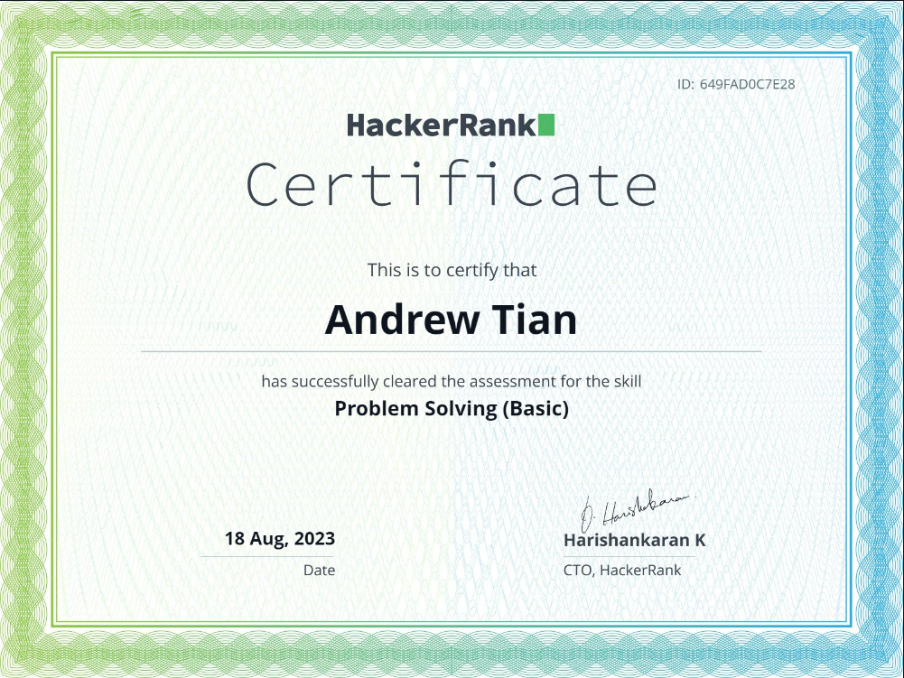

Andrew Tian
Summary
Aspiring to be a professional software engineer, while picking up web development as an additional asset.
Education
Currently a Computer Science and Information Engineering student in National Dong Hwa University, Taiwan.
Work Experience
- Warehouse Associate - 全家物流 FamilyMart
February 2022 - April 2023
- Handled warehouse management systems
- Resolved stocks issues
- Managed product distribution between retailers
- Held conversations in Mandarin
- Junior Programmer Intern - TSMC
May 2023 - Current
- Critical thinking in problem solving
- Resolved and debugged codes within modules
- Managed modulation and pipelining of projects
Skills
- Problem Solving: 4/5
- Customer Handling: 3/5
- Organizational Skills: 4/5
- Pipeline Management: 4/5
Adept Programming Languages:
- C++
- C
- Python
- MIPS (Assembly Language)
Currently Developing on:
- Web-Development: HTML, CSS, Javascript
Additional Skills:
- Proficient in Mandarin
- Able to...
Certifications

Other